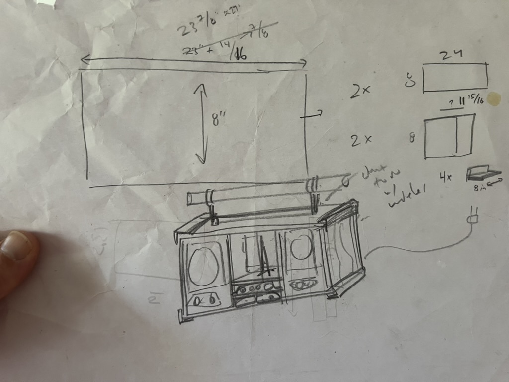
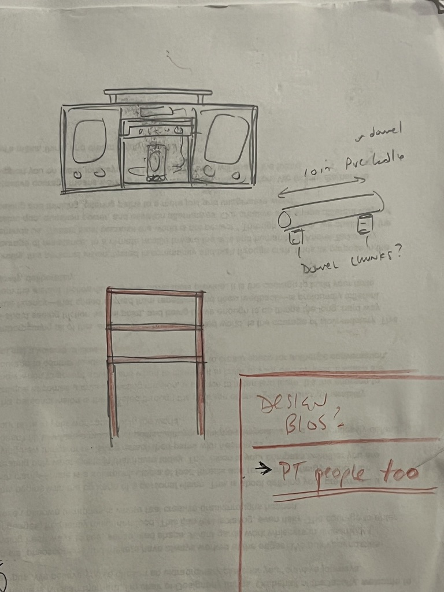
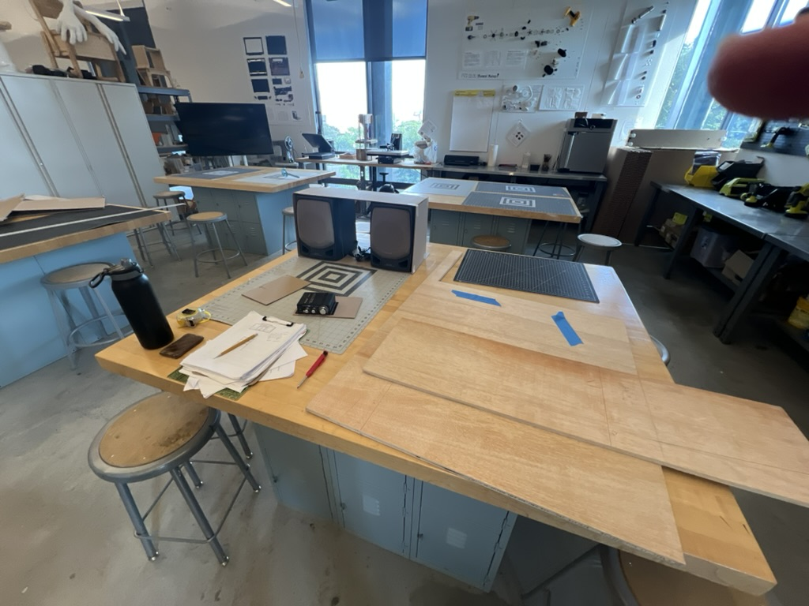
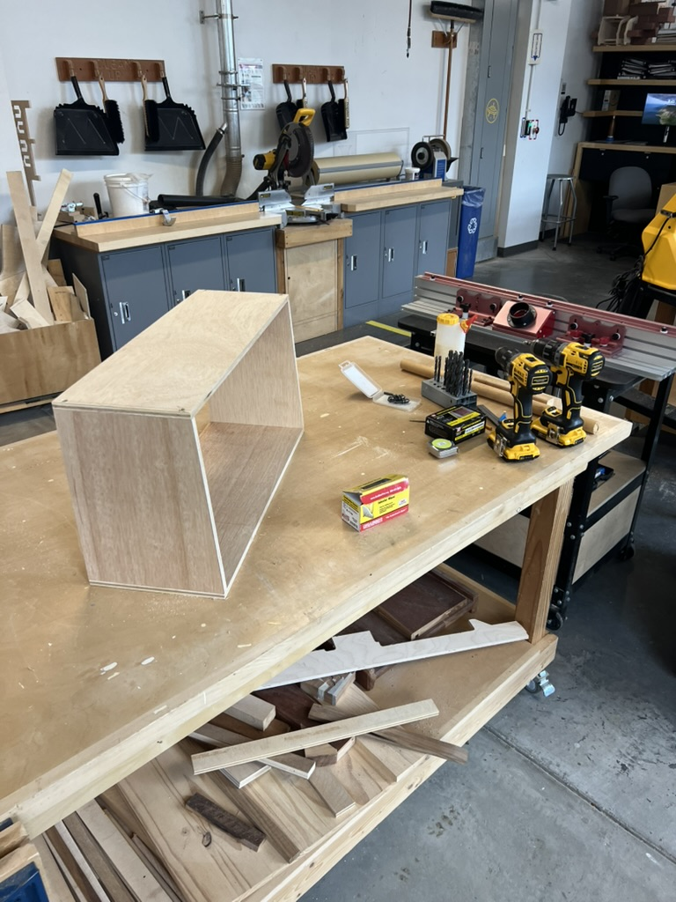
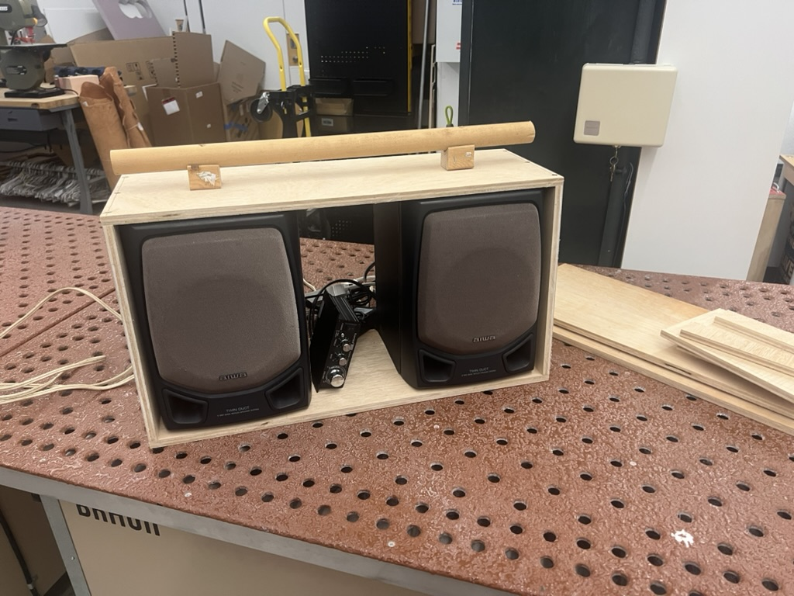
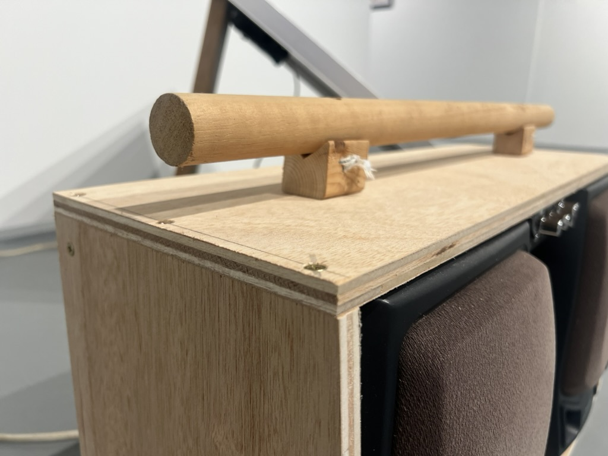
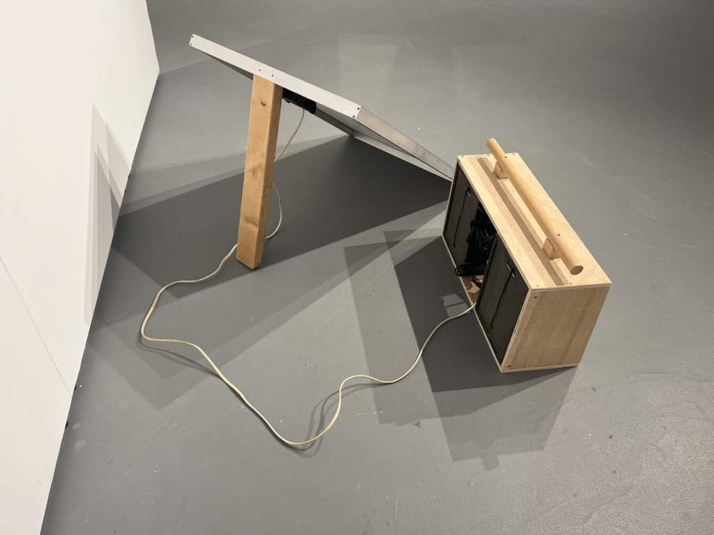

Solarpunk Boombox is part of an ongoing series of speculative design fictions that are also fully working objects. Rather than answer the provocation in a rendering, this one gets answered in the shop — with a miter saw, a drill, and whatever was already on the shelf.
Ad hocism as method
The build takes the most familiar form in consumer electronics — the boombox — and rebuilds it from what was on hand: plywood offcuts for the body, a scrap dowel for the handle, a pair of salvaged Aiwa speakers, an amplifier, and a decommissioned Apple AirPort Express, wired together with whatever adapters made the connections work. Nothing here was bought new for the project; the aesthetic is the material logic made visible.
How it's powered
A solar panel charges a power station built around a pair of 20-volt power-tool batteries. From there, the boombox runs off battery power — or plugs directly into a wall outlet with a standard extension cord. Same object, three ways to keep it running.
How it plays
The salvaged Apple AirPort Express gives it AirPlay streaming; there's also a standard 1/8" aux jack for anything that wants to plug in directly.
In the shop
From sketch to finished object: sourcing salvaged speakers and offcut plywood, cutting and assembling the enclosure, then wiring it all together.






